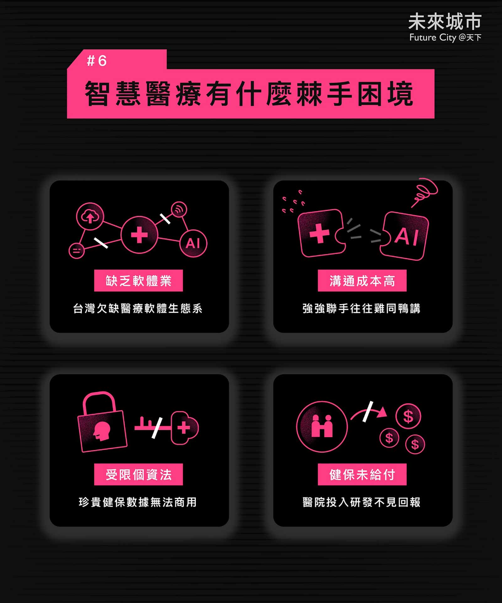

智慧醫療懶人包
智慧醫療如何調適醫護人力短缺？
這是台灣醫界的縮影，但全球也面臨同樣問題。“Transforming healthcare with AI: The impact on the workforce and organizations”（健康照護AI轉型：人力與組織的衝擊）預期，2050年，美國與歐洲將有1/4人口超過65歲。
人老了，上醫院的機率增加，全球卻面臨醫護荒——WHO統計，到2030年，全球還需要990萬名外科醫師、護士和照護人員。
智慧醫療包含哪些科技應用？
根據WHO的定義，智慧醫療泛指資通訊技術（ICT）在醫療健康領域的應用，包括醫療照護、公衛監測等最常用於智慧醫療的新科技，英文字母首字正好是「ABCDEF」——人工智慧（AI）、區塊鏈（Blockchain）、雲端（Cloud）、大數據（Data）、邊緣運算（Edge Computing）與5G（Fifth Generation）。
智慧醫療能用在哪些領域？
「人工智慧有翻轉醫療照護的潛力，」麥肯錫報告指出，智慧醫療將影響六大領域，包括慢性病管理、自主管理與疾病預防、疾病診斷、診斷分流、臨床決策支援與照護服務。能改善醫療成效、病患經驗，使醫療服務更可親，進而增加醫護體系的效能，照顧更多病患，避免醫護人員過勞。
科技為醫療帶來什麼優勢？
根據國發會報告，美國基層醫療醫師所進行調查發現，近75%醫師表示，資訊科技應用技術能夠降低錯誤事件；70%則認為資訊科技能夠提升生產力；而60%則表示，資訊科技具備降低成本、以及培養病人端建立承擔更多責任的潛力。麥肯錫則更看重人工智慧。
智慧醫療發展面臨哪些挑戰？
麥肯錫發現，仍有44%醫護人員的工作從未涉及人工智慧；L.E.K.顧問則評估，以自動駕駛AI的發展六階段（Level0到Level6）來看，智慧醫療的最高表現則只有Level1（無人車則介於Level2到3），
代表醫療AI技術尚未成熟，須在醫護人員完全掌控下，才能協助醫療決策，「大部分是實驗性地、選擇性地使用於協助醫院的臨床與非臨床工作流程。」
智慧醫療棘手困境
台灣缺乏醫療軟體生態、科技與醫療溝通成本高、受限個資法健保數據無法商用、健保也不見得給付，全盤投入可能研發可能是個危機。一、受限法規，醫療數據取得困難
二、健保補助有限，醫院缺乏推廣誘因三、台灣缺乏軟體產業四，醫界與科技業文化大不同

如何加速智慧醫療？
麥肯錫認為，持續投資AI、持續數位化、成本壓力、消費主義興起、醫護人力不足、動態醫療模式的趨勢、數位優先的醫療模式興起、價值導向的醫療趨勢、持續的科學研究等九大因素，使得醫療AI遲早會實現。